01 — THE KILNS
南风灶与高灶
两座柴烧龙窑，是认识石湾陶业的起点。沿窑身看窑门与火眼，想象陶器如何在长窑中经历火候变化。
从窑口，向坡上看。土与火，造就生活之美Clay and Fire Shape a More Human World
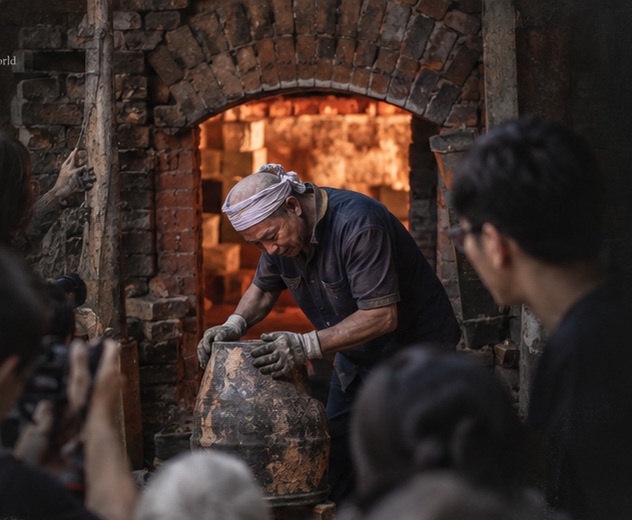
石湾
一座仍在生长的
陶窑社区
石湾陶
生活的艺术
Beyond the Kiln Fire,
Shiwan Lives On.
火焰会停息，手艺仍在人的手中继续。
在南风古灶，陶与火仍是日常。
The fire may rest, but the clay goes on.
In people’s hands, Shiwan’s story continues.
泥土不语
火焰有声
A Visitor Route Through the Living Pottery Town
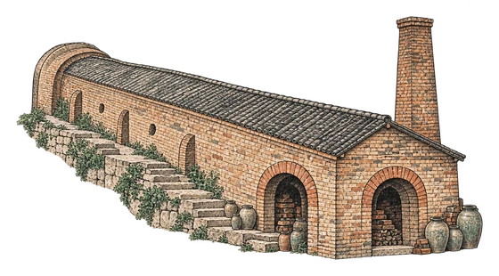
看窑See the Kiln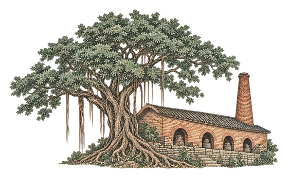
古灶榕风The Banyan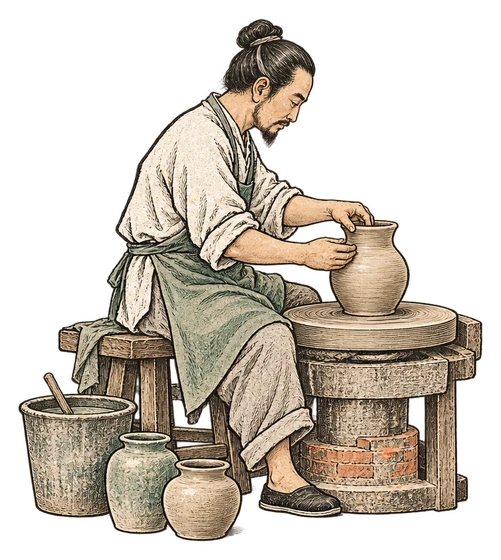
看陶艺Watch the Pottery Making看窑 → 进古窑 → 看陶艺 → 选一件石湾公仔
南风古灶依坡而建，顺坡延伸，窑体呈长条状。自明代正德年间建窑以来，窑火绵延不绝，承载着南丰的制瓷传统与地方记忆。
上与火
造就日常
也留下山河
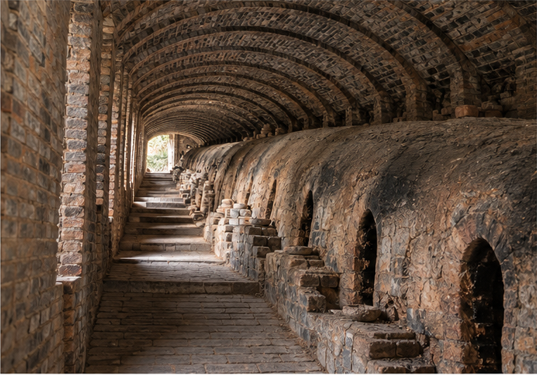
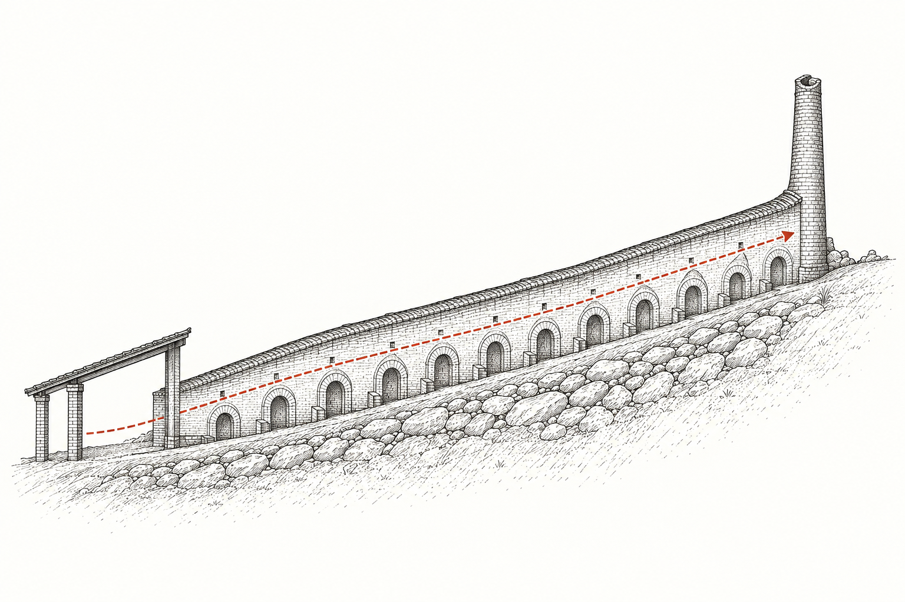
烟囱（出烟口） 南向窑门（进火口） 窑火行进路径 非比例示意 · NOT TO SCALE生成式线稿示意，非遗址测绘或比例复原；具体结构以现场为准。
由窑体、古榕、作坊走进陶艺家村。景点开放与现场展示会随运营安排变化。
两座柴烧龙窑，是认识石湾陶业的起点。沿窑身看窑门与火眼，想象陶器如何在长窑中经历火候变化。
从窑口，向坡上看。
窑旁古榕为景区留下另一种时间感。抬头看树冠，再回望依坡铺展的屋顶，窑与岭南街巷在这里相遇。
看树，也看窑的坡势。
从工具、泥料和半成品读懂工艺；若现场有示范，可以观察石湾公仔与陶艺制作。体验项目及开放时段以当期安排为准。
先看工具，再看作品。
明清古民居改造而成的艺术家村，让陶艺继续在街巷里生长。沿途留意《瑞龙献宝》：陶片不只在窑里，也成为城市记忆的一部分。
从老屋，走到新的表达。
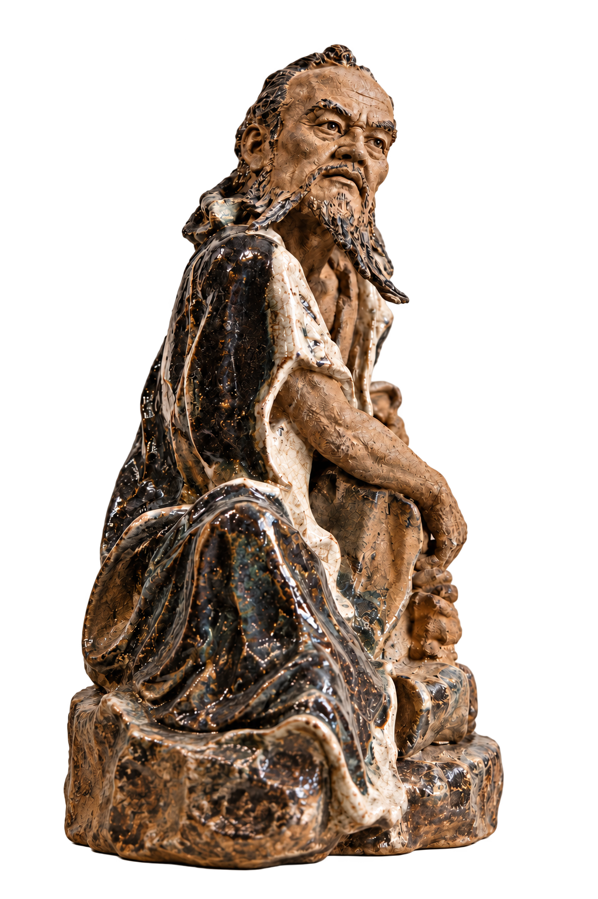
在南风窑，陶不是遥远的文物，而是仍在发生的生活。
从一团泥土，到一件有温度的作品，
是手、时间与火的共同完成。
火候，由师傅经验掌握。
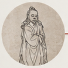
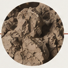
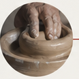
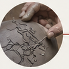
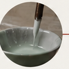
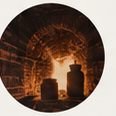
石湾陶的生命力，在于一代代匠人的实践与体会。泥性、火性、气候、经验，这些看不见的知识，通过双手传递，也在每一次创作中被重新理解。
HUMAN HANDS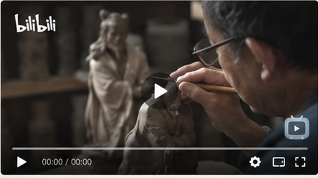
参考图裁切封面；播放时载入哔哩哔哩原视频如播放器未能载入，可直接打开哔哩哔哩原视频。
从敬谢窑神的祈愿，到开窑时围看新作，再到市集与茶会，陶不只被陈列，也继续进入日常交往。
围绕窑火与灶神的民俗表达，寄托对平安、丰收与顺利烧成的祝愿。具体仪式依当期活动而定。
封窑、烧成、开窑连着等待与经验。开窑或添柴活动只在特定时段举办，出发前查询景区当期公告。
古玩市集、陶艺摊位与茶会把创作者、街坊和访客带到一起；活动名称、场地与档期可能调整。
这些是节庆与主题活动，不是每天固定演出；请以景区官方当期公告为准。
从现场示范到陶塑与文创，先了解作品如何诞生，再挑选一件真正喜欢的陶。

以人物、神佛、瑞兽等为题材的陶塑传统，既有古典造型，也有当代创作。作品和作者因店铺、展览而异。
媒体报道记录过捏陶、拉坯、釉彩体验。体验场次、费用、烧制和寄送安排须向现场工作室确认。
公开报道提及龙窑主题文创、咖啡与石湾公仔联名等产品。款式、供应与售卖点会变化，请以店内为准。
按自己的节奏走：先看窑，再逛作坊和艺术家村，最后挑一件真正喜欢的石湾作品。开放与体验信息请以景区当期公告为准。
本页为独立文化导览，不代表景区官方；门票、预约、活动和交通信息请以运营方最新通知为准。